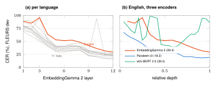
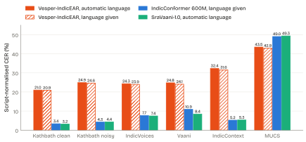
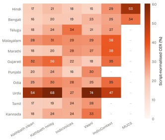
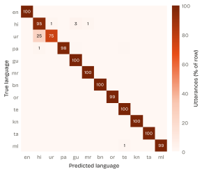
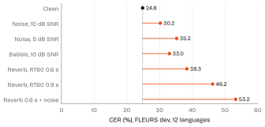
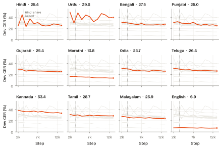
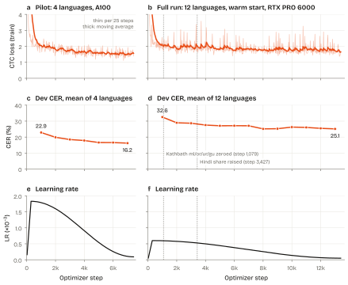
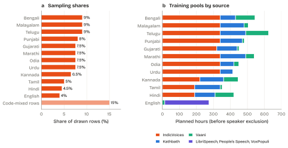
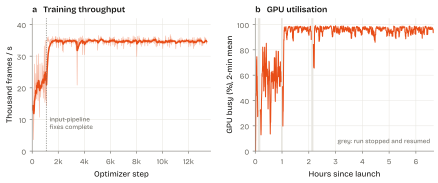
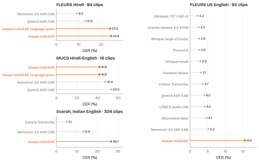

1Introduction
Speech recognisers are usually built on encoders trained for recognition, either supervised on transcribed speech [1, 2] or self-supervised and then fine-tuned [3, 4, 5]. A different kind of audio encoder has recently become widely available: the audio towers of multimodal embedding models. EmbeddingGemma 2 [6, 7] embeds speech, text and images into one space so that a spoken query can retrieve a passage by meaning.
Its audio tower is the 305M-parameter encoder of Gemma 4 E2B, a Conformer based on the Universal Speech Model whose continuous outputs Gemma 4's language model reads for speech tasks [8, 9]. In a sampled comparison of the released weights, the tower's tensors are identical in the two models except the output projection. The encoder therefore carries speech information. The question is whether it can be read without the language model, by small layers on top of an encoder that an application may already run for retrieval. If so, one frozen encoder could serve retrieval, language identification and transcription together, and adding a language would mean training a few tens of megabytes of output layers rather than a new model.
Indian languages are a demanding test of this idea. The eleven languages we target use ten writing systems (nine Brahmic scripts and Perso-Arabic), plus Latin for English. Speakers switch between their language and English within a sentence, and transcription conventions differ on whether those English words are written in Latin or native script. Hindi and Urdu are largely one spoken language written in two scripts. Most public transcribed speech comes from a few large collections of read, prompted and extempore speech [10, 11, 12].
We set three questions:
- Feasibility. Can a frozen embedding-model audio tower, with only small trained layers, transcribe 11 Indian languages and English?Yes.
- Script and language. Can a single output layer write each word in its correct script, and report the language, without a language picker in front of the recogniser?Mostly, with Hindi–Urdu the main exception.
- Gap. How far is the result from dedicated Indic recognisers on the same clips, and where does the gap come from?Far: on the Indic test sets its error is 3 to 7 times that of the better dedicated model.
Contributions
- A recipe for ASR on a frozen embedding encoder (§3): staged execution of the unmodified tower with residual adapters, self-conditioned phonetic CTC, a script-factored CTC output over 11 scripts, LID heads that report but do not route, and decode-time script rules.
- An account of what each part adds: linear probes of the frozen tower layer by layer and against two other encoders (§6.1), an ablation of the trained components on a fixed 12-language set (§6.2), and the effect of the decode-time rules (§6.3).
- A speaker-disjoint comparison on identical clips with two dedicated Indic recognisers under one script-normalised metric (§6.4), released with every system's per-clip output as a benchmark.
- A streaming training framework that trains on 53 Hub-hosted streams without downloading the corpora, and a record of the failure modes we met: input-pipeline starvation, side effects of speaker exclusion, Hindi–Urdu script competition, and a scoring artefact that briefly made an early model look competitive (§7, §8.4).
We are not the first to train recognisers on this encoder (§2). What this work adds is a single multilingual, multi-script model with language ID on the fully frozen tower and without its language model, an explicit factorisation of the output by script, and a careful measurement of how far that approach goes.
3Model
![Architecture diagram. 16 kHz audio passes through a frozen log-mel and convolutional subsampler at 25 frames per second, frozen Conformer layers 1 to 6, then layers 7 to 9 and 10 to 12 with residual adapters, into a trained script-factored CTC output and parameter-free decode-time script rules, producing text with each word in its own script plus language spans. Phonetic CTC heads after layers 6 and 9 feed back into the stream. A learned mix of layers 6 and 12, under stop-gradient, feeds utterance and frame language-ID heads; the utterance posterior drives the script rules.](figures/architecture.svg)
Figure 1 shows the model. The only trained parts are the 11.8M parameters in orange; Table 1 lists them.
3.1 Frozen encoder
The encoder is the audio tower of google/embeddinggemma-2 at revision 914f7f89 [6, 7]: a USM-based Conformer [8, 9, 40] with two downsampling convolutions to 25 frames per second (40 ms), 12 layers of width 1,024 with 8 attention heads, and chunked attention with chunk size 12, left context 13 and no right context. It has 305M parameters. The tower's output projection to the 1,536-dimensional embedding space and the model's text and vision parts are not used.
We run the tower in two stages with its own modules and mask functions, so nothing in it is re-implemented: layers 1–6 without gradient, and layers 7–12 with adapters attached by forward hooks. Padded input frames are zeroed and padded attention keys are masked, so batched computation is exact per utterance; attention sees nothing beyond the current 12-frame chunk, so long audio can be transcribed in overlapping windows.
3.2 Trained components
| Component | Parameters |
|---|---|
| Residual adapters, layers 7–12 (rank 128) | 1.59M |
| Phonetic CTC + self-conditioning, layers 6, 9 | 0.34M |
| Script-factored output (11 scripts, 8,964 pieces) | 9.20M |
| Utterance LID (12 languages) | 0.40M |
| Frame LID (13 classes) | 0.27M |
| Total | 11.8M (45 MB) |
Residual adapters
In each of layers 7–12, a bottleneck adapter [14] reads the block's second half-step feed-forward output z and adds
to it, before the block's clamp and output normalisation (Figure 2a), with . is zero-initialised, so training starts from the exact frozen encoder. Adapters go only on the upper half because the probes of §6.1 show the transcription-relevant information growing towards the top of the tower.
Self-conditioned phonetic CTC
After layers k ∈ {6, 9}, an intermediate CTC head [32] predicts a shared inventory of 80 phonetic units (82 outputs with blank and a word boundary), and its posterior is fed back into the residual stream [33]:
with Bk zero-initialised. The units are ISO 15919-style labels shared by the Brahmic scripts through their common ISCII block layout [41, 42], Indian-accent spelling rules for English (retroflex t/d, w→v), and a lossy consonant-skeleton romanisation for Urdu. Sharing one inventory lets related languages share acoustic targets in the middle of the encoder, as in hierarchical multilingual CTC [34]. The phonetic units are never the output: a shared inventory can merge words that sound alike but are spelled differently, so the transcript always comes from the script-factored output.
Script-factored CTC output
Each script has its own SentencePiece unigram model [43, 44]: 1,024 pieces for Devanagari and Latin and 768 for each of the other nine scripts, trained with the script's full character inventory as required characters so that any word in it can be spelled. The output layer reads and factorises each piece y through its script s(y) (Figure 2b):
where p(s | ht) is a softmax over the CTC blank (script class 0) and the 11 scripts, and p(y | s, ht) is a softmax over the pieces of script s only. The result is one normalised distribution over blank and all 8,960 pieces (8,964 outputs including blank and three special tokens that are never emitted), trained with ordinary CTC [45]. Compared with a flat softmax, scripts do not compete for probability mass piece by piece, the script of every emitted piece is explicit (which the decode-time rules use), and a script can be added with its own rows without touching the others.
![Two panels. (a) A frozen Conformer block of layers 7 to 12: half-step feed-forward, chunked self-attention with chunk 12, left context 13 and right context 0, causal convolution, second half-step feed-forward; the adapter (LayerNorm, 1024 to 128, SiLU, 128 to 1024, zero-initialised) reads the second feed-forward output and adds to it before clamp and output norm. (b) The script-factored output: the LayerNorm of layer 12 feeds a script softmax over blank and 11 scripts and piece logits split into per-script softmax blocks, combined into one CTC distribution.](figures/components.svg)
Language identification as an output, not a router
Two LID heads each read their own learned softmax-weighted mix of the layer-normalised states of layers 6 and 12, taken under stop-gradient, so they cannot change transcription training. The utterance head applies attentive statistics pooling [46] and a two-layer MLP (hidden size 256) to predict one of 12 languages; for code-mixed rows the target is the matrix language. The frame head predicts, per 40 ms frame, non-speech or one of the 12 languages. On monolingual rows every valid frame gets the utterance language; on code-mixed rows with word-level language labels, the head is trained with CTC over the sequence of language runs (blank = non-speech), so it learns where switches occur without forced alignment. The transcript never depends on these heads except through the optional script rules below.
3.3 Training objective
The loss is
where ℒphon is the mean of the two intermediate CTC losses. The utterance-LID loss uses label smoothing 0.1 [47] and class-balance weights proportional to hc−1/2 for hc planned training hours of language c; the frame-LID loss is unweighted. The pilot stage (§4) used weights 0.3 for the phonetic and 0.1 for the frame-LID loss. Time and feature masks in the style of SpecAugment [48] are applied to the layer-6 states during training (masked values take the utterance mean), on top of the waveform augmentation of §4.
3.4 Decode-time script rules
Greedy and prefix-beam [49] CTC decoding can apply three rules without retraining (Algorithm 1).
- (a) Word boundary
- Within a word, the script may change only from Latin into a piece that starts with a full Indic letter (an English stem with an Indic suffix), and a combining mark may never follow a piece of another script; a Latin piece glued to an Indic word is treated as a missed word boundary and starts a new word.
- (b) LID script set
- Only Latin, the script of the most likely utterance-LID language, and up to two further Indic scripts whose languages have posterior above 0.15 are allowed.
- (c) Exclusive scripts
- Devanagari and Perso-Arabic never mix in one utterance: the script whose languages have the larger total LID posterior is kept, with ties broken by the decoded evidence for each script.
A caller who knows the language can pass it as a hint, which replaces the LID posterior in (b) and (c). Latin always stays allowed, so code-switching into English is never removed by the rules.
- if ℓ̂ given then q ← onehot(ℓ̂)
- S ← {Latin, script(argmaxℓ q)} ∪ {script(ℓ) : ℓ ∈ top₂ Indic scripts of q, q(ℓ) > 0.15} ▷ rule (b)
- if Devanagari ∈ S and Perso-Arabic ∈ S then ▷ rule (c)
- drop the one with smaller Σℓ: script(ℓ)=· q(ℓ)
- mask every piece whose script ∉ S
- for t = 1, …, T do ▷ rule (a)
- yt ← argmaxy log p(y | ht) over pieces allowed after the current word's script
- return collapse repeats, remove blanks, detokenise
4Data and training
4.1 Training data
All training data is CC BY or CC0 and is streamed from the Hugging Face Hub at pinned revisions (Table 2). Only development and evaluation sets are downloaded. MUCS 2021 [50] (CC BY-SA) is used for evaluation only, and no non-commercial data is used.
Transcript conventions
Indic words are written in their native script and English words in Latin script. IndicVoices [gloss] and Vaani {gloss} English annotations replace the native-script word only when the native word sounds like the English gloss. Kathbath writes English loanwords in native script, so its transcripts go through a loanword normaliser that rewrites them in Latin.
Mixture
The mixture has 53 streams, one per source and language plus code-mixed-only streams. Rows of 0.5–20 s are drawn by temperature sampling [54] (α = 0.5) within pinned per-language shares (Figure 11); code-mixed rows are 15% of draws and non-speech negatives a fixed 2%.
Speaker-disjoint protocol
Every speaker of every development and evaluation set is removed from training. For Kathbath, whose "test-known" speakers are by design also training speakers, this removes 49% (Bengali) to 100% (Odia) of training rows. Our Kathbath scores are therefore speaker-disjoint, unlike those of models trained on Kathbath's training speakers.
4.2 Two-stage training
- Pilot
- Hindi, Tamil, Kannada and English, from the frozen encoder with newly initialised heads: 7,423 steps over 2,664 h of audio in about 4.3 A100-hours. Its CER on its own speaker-disjoint development set fell from 22.9 to 16.2.
- Full run, warm-started
- All 12 languages, starting from the pilot's final weights: 13,394 steps over 8,356 h of audio in about 6 GPU-hours on one RTX PRO 6000 (96 GB). The pilot's Devanagari, Latin, Tamil and Kannada tokenizers and their output rows are kept unchanged; the seven new scripts get their own tokenizers and new output rows initialised with bias −2 and trained at three times the base learning rate. Adapters, phonetic and LID heads continue from the pilot; the optimiser and schedule restart.
Optimisation
AdamW [55], weight decay 0.001, gradient clipping 1.0, bfloat16 autocast; a step whose gradient norm is not finite is skipped. The full run used peak learning rate 6×10−4 with 300 warm-up steps and cosine decay to 5×10−5. Batches have a dynamic budget of 71,676 encoder frames (about 48 minutes of padded audio), chosen by an autotuner that targets 85% of GPU memory on probe batches. Half of the rows are augmented on the GPU before the log-mel: additive noise, babble, reverberation (RT60 0.3–0.9 s from 128 synthetic room impulse responses), speed perturbation (0.9/1.1) [56], 8 kHz band-limiting, and GSM, Opus or AMR codecs on 15% of clips. Table 8 lists every setting for both stages.
4.3 Streaming input pipeline
The mixture is 0.7–1.1 TB of audio against about 190 GB of free disk on the training machine, so nothing is downloaded in advance (Figure 3). Each stream reads Parquet shards from the Hub through a bounded shard cache and parses, length-checks and filters rows on its own read-ahead thread. A planner draws from the streams by temperature into a shuffle buffer and duration-bucketed batches. Rows are decoded in parallel on free-threaded CPython 3.14 [57], without the global interpreter lock; training uses PyTorch [58] and the encoder implementation of Hugging Face Transformers [59]. The input state is part of every checkpoint, so a resumed run sees exactly the rows it would have seen. After the fixes described in §8.4, the GPU was 93–99% busy at about 35,000 encoder frames per second, or about 1,390 hours of audio per GPU-hour.
![Pipeline diagram: Hugging Face Hub Parquet shards at pinned revisions, a bounded 100 GB shard cache, 53 stream readers with one thread each and 64-row read-ahead, a temperature planner with alpha 0.5, a shuffle buffer of about 3 hours of audio into duration buckets, parallel row decoding on free-threaded CPython, GPU augmentation and log-mel, then the frozen tower and trained layers with a dynamic frame budget of about 48 minutes of audio per step. Checkpoints every 500 steps or 10 minutes store weights, optimiser and full input state for exact resume.](figures/pipeline.svg)
5Evaluation protocol
Held-out sets
Kathbath clean and noisy test (unseen-speaker and test-known splits) [11], IndicVoices validation [10], Vaani test [12], IndicContextEval [39], MUCS 2021 Hindi and Bengali test [50], LibriSpeech test-clean and test-other [51], VoxPopuli English test [53], Svarah (Indian-accented English) [60], and FLEURS development [61], with six acoustic corruptions of it. FLEURS test was never read during development. No speaker of these sets appears in training (§4).
Compared systems
IndicConformer 600M multilingual [30] (revision 2a77d305, CTC decoder, given the language as it requires) and SraVaani-1.0 [36, 62] (revision f5dd5358, automatic language; it does not support Urdu). Each runs its repository's own inference code at the pinned revision. Vesper-IndicEAR is run in two modes: automatic, where its own LID drives the script rules, and language given, where the clip's language is passed as a hint, matching IndicConformer's input. Both use greedy decoding with the rules of §3.4. MUCS results in Table 4 are on the full test sets; all comparisons with the baselines are on the 300-clip subsets below. For the comparison, every system decodes the same first 300 clips per language of each set, and we release the clip list, the references where their licences allow, and every system's per-clip transcript.
Script-normalised CER
IndicVoices and Vaani references write English words in Latin script, whereas IndicConformer and SraVaani write them in native script. Strict CER counts that as an error. Our script-normalised CER (sn-CER) accepts an English word in either script, scoring each hypothesis against the closest whole-reference variant, in the spirit of SN-WER [38]. Before scoring, a fold removes spelling conventions that are not recognition errors: Malayalam chillus, Bengali khanda ta, the Marathi eyelash ra, Urdu heh variants, tatweel and short-vowel marks, NFKC presentation forms, and native digits. For English-only sets sn-CER equals CER.
6Results
6.1 What the frozen tower already encodes
Before training anything larger, we trained a linear CTC probe on each layer of the frozen tower, one language at a time, on 3–10 hours (7 on average) of FLEURS training speech per language (a LayerNorm and linear layer over a 256-piece SentencePiece unigram vocabulary per language, 6 epochs), and scored it on FLEURS development (Figure 4). The best Indic probe reaches 16.1–27.1% CER (median 22.7) and English 29.4%. For all languages the best layer is 11 or 12: the information a CTC reader can use grows towards the top of the tower, which motivated adapters on the upper half.
On English we ran the same probe on two other encoders: the best layer of the encoder of Parakeet-TDT-0.6B-v3 [2, 37, 63], an ASR-trained FastConformer, reaches 18.2% and that of w2v-BERT 2.0 [64] 39.3%. The EmbeddingGemma 2 tower thus sits between a self-supervised encoder and an ASR-trained CTC encoder: its states carry the content, but less of it is linearly decodable (11 CER points behind on English), which bears on the gap discussed in §7.2.

6.2 What each trained component adds
On a fixed 12-language set (FLEURS training, 88 h, 10 epochs; FLEURS development for scoring) we added the trained components one at a time to the frozen tower (Table 3). Adapters bring the largest gain, from 36.2 to 27.7 mean CER over 11 languages. Self-conditioned phonetic CTC did not lower CER at this data scale but reduced script errors; the script-factored output had the lowest CER (27.6) and the fewest script errors (10.0% of words in the wrong script).
| Variant (cumulative) | CER | Script err. | Urdu CER | Code-switch | |
|---|---|---|---|---|---|
| v1 | linear CTC on layer 12 | 36.2 | 13.9 | 55.3 | 33.9 |
| v2 | + adapters, layers 7–12 | 27.7 | 11.2 | 76.7 | 27.3 |
| v3 | + phonetic self-conditioning | 28.2 | 10.5 | 75.7 | 28.5 |
| v4 | + script-factored output | 27.6 | 10.0 | 81.7 | 27.4 |
Each variant ran with one seed and with its own autotuned batch and learning rate (from 111,806 frames, 2.4×10−3 and 880 steps for v1 to about 20,000–24,000 frames, 1.0–1.1×10−3 and 3,540–4,390 steps for v2–v4, all 10 epochs), so differences of under one point between v2 and v4 should not be read as significant; the script-error reduction guided the choice more than CER. We chose v4 and added the LID heads. Urdu is excluded from the means because, once adapters are added, it is mostly written in Devanagari: Hindi and Urdu share their acoustics and their scripts compete (§7.1). Two further variants, CR-CTC consistency regularisation [65] and a factored transducer head, are implemented in the released framework but were not evaluated in this study.
6.3 Decode-time script rules
The final model makes many script errors when decoded without constraints: on FLEURS development 20.2% of words over all 12 languages are in the wrong script, 64.8% for Urdu. The rules of §3.4 halve that and lower CER from 28.7 to 24.8 (Table 4), with the largest effect on Urdu, Hindi and Gujarati. English is unaffected.
| Unconstrained | Rules (a)–(c) | |
|---|---|---|
| All 12 languages | 28.7 (20.2) | 24.8 (9.4) |
| Hindi | 31.7 (21.0) | 26.2 (9.8) |
| Urdu | 63.5 (64.8) | 44.4 (31.1) |
| Gujarati | 36.4 (28.3) | 29.6 (11.6) |
| English | 17.2 (0.4) | 17.2 (0.0) |
| MUCS Hindi test | 49.6 | 45.6 |
| MUCS Bengali test | 43.9 | 41.9 |
| Synthetic Hindi+English pairs | 16.7 | 30.8 |
On a synthetic set of concatenated sentences in two languages, however, the rules raise CER (for Hindi+English from 16.7 to 30.8). A likely cause, which we have not analysed further, is that rule (b) is decided once per utterance from a single LID posterior, so on these artificial inter-sentential pairs it can remove the script of one of the two halves. Natural intra-sentential code-switching into English is not affected in the same way, because Latin is always allowed; on MUCS the rules lower CER for both Hindi (49.6→45.6) and Bengali (43.9→41.9). Per-frame use of the frame-LID head is the natural fix and is left to future work.
6.4 Held-out comparison with dedicated recognisers
| Vesper-IndicEAR | IndicConformer | SraVaani | |||
|---|---|---|---|---|---|
| Test set | automatic | language given | 600M | 1.0 | Languages |
| Kathbath clean, unseen speakers | 21.0 | 20.9 | 3.4 | 3.2 | 10 |
| Kathbath clean, test-known speakers | 20.5 | 20.4 | 3.3 | 3.1 | 10 |
| Kathbath noisy, unseen speakers | 24.9 | 24.6 | 4.3 | 4.4 | 10 |
| IndicVoices validation | 24.3 | 23.9 | 7.7 | 7.4 | 10 |
| Vaani test | 24.8 | 24.1 | 10.9 | 8.4 | 10 |
| IndicContext | 32.4 | 31.6 | 5.2 | 5.3 | 7 |
| MUCS 2021 (Hindi, Bengali) | 43.5 | 42.9 | 49.0 | 49.3 | 2 |

Table 5 and Figure 5 compare the systems on identical clips. Vesper-IndicEAR reaches 21–32% sn-CER on the Indic sets, three to seven times the error of the better dedicated model, and leads only on the MUCS mean, a set of code-switched lecture and tutorial speech on which all systems score poorly; per language it leads on MUCS Bengali (34.2 against 46.4) but trails slightly on MUCS Hindi (52.9 against 51.7). Of 65 (set, language) pairs it is better than the better baseline in one, in both modes (MUCS Bengali).
Passing the language helps mainly where the automatic LID is wrong: Urdu (§7.1), Hindi on IndicContext (28.7→23.9) and Punjabi on Vaani (29.8→24.1). Errors vary widely by language (Figure 6). On Kathbath, Gujarati, Malayalam and Odia are clearly harder than Hindi, Bengali, Tamil and Telugu, but the ranking changes across sets (Gujarati is among the easiest on IndicVoices and Vaani), so it reflects the data as much as the language.

6.5 English, language identification and robustness
| English test set | CER (%) |
|---|---|
| LibriSpeech test-clean / test-other (full) | 7.2 / 13.0 |
| VoxPopuli test | 12.8 |
| FLEURS development | 17.2 |
| Vaani English test | 16.9 |
| Svarah (Indian-accented English) | 25.6 |
| Utterance LID, FLEURS development | |
| accuracy / macro-F1 (12 languages) | 97.8 / 97.1 |
| F1 Hindi / Urdu / all others | 84.7 / 85.5 / ≥98.9 |
English is recognised at 7.2/13.0% CER on the full LibriSpeech test sets, but more weakly on accented and spontaneous speech (Table 6). The utterance LID is correct on 97.8% of FLEURS development utterances; its only material confusion is Urdu speech labelled Hindi (Figure 7), which bounds the automatic script choice for Urdu. Acoustic corruption degrades the model steeply, and reverberation most of all (Figure 8): with RT60 0.9 s CER rises from 24.8 to 46.2, and with RT60 0.6 s reverberation plus point noise at 10 dB to 53.2. Reverberation augmentation in training, which can only shape the adapters and heads, did not remove this weakness.


7Analysis
7.1 Hindi and Urdu: one spoken language, two scripts
Hindi and Urdu speech differ mostly in vocabulary register, and our training data separates them only by the script its transcribers used. The full-run mixture initially gave Urdu 7.5% of draws and Hindi 4.5%, since Hindi had already been trained in the pilot. After step 2,000 the model began writing Hindi speech in Urdu script: Hindi CER on the run's development set rose from 24.8 to 44.5 by step 3,000 while Urdu fell from 49.0 to 29.6 (Figure 9); on 30 Hindi clips, 11 utterances mixed both scripts.
Two fixes followed. Decode rules (a) and (b) lowered Hindi CER on those clips from 50.7 to 41.0, and rule (c), which forbids mixing the two scripts in one utterance, to 39.7. From step 3,427, Hindi's share of draws was raised to Urdu's; Hindi recovered to 23.3 by step 4,000 and the balance tipped back towards Devanagari.

For the final model, the utterance LID recognises 95% of FLEURS Hindi utterances but labels 25% of Urdu ones as Hindi (Figure 7), which bounds the automatic script choice: in automatic mode Urdu reaches 54–74% sn-CER on Kathbath and Vaani, and passing the language brings it to 32–50% (Appendix A). A model that is meant to serve both scripts needs either a script preference from the user or a stronger, register-aware language decision.
7.2 Why the gap to dedicated models
The gap is large and consistent across test families (Table 5). In our judgement the causes are, roughly by weight:
- Reading the frozen encoder without its language model. The encoder carries much more than our reader extracts: read by Gemma 4 E2B's language model, it reports 10.1% WER on FLEURS Hindi [8], whereas Vesper-IndicEAR reaches 40.8% WER with the language given on 84 FLEURS Hindi test clips (Appendix B; the text normalisation differs, so the comparison is indicative only). Its states are also less linearly decodable than those of an ASR-trained CTC encoder: the best linear probe trails Parakeet's by 11 CER points on English (§6.1). Six rank-128 adapters and CTC heads recover part of this; a deeper or autoregressive reader, or adapting the upper encoder layers, are the natural next steps.
- Training data. About 8,400 hours of audio were processed, much of it seen more than once, whereas SraVaani was pre-trained on 31,255 hours of unlabelled Vaani audio, aligned with images, and fine-tuned on 31,263 hours of labelled speech from 24 datasets [36], and IndicConformer on the IndicVoices collection and other corpora [10].
- Speaker-disjoint Kathbath. Our training saw few Kathbath speakers (§4); dedicated models typically train on Kathbath's training speakers, and its test-known split shares them by design. Kathbath is nevertheless where the gap is widest, so this explains only part of it.
- Tokenisation. Marathi averages about 3.4 Devanagari pieces per word, against 1.4 for Hindi, because the Devanagari tokenizer was trained in the pilot on Hindi text only and kept for the warm start.
MUCS is the exception: it is code-switched lecture and tutorial speech on which all systems score poorly. Our training on code-mixed IndicVoices and Vaani rows may help there, but we have not isolated the cause.
7.3 A scoring artefact we nearly reported
An early comparison of the pilot model scored strict CER and showed it ahead of IndicConformer on Vaani and MUCS. Almost all of that lead came from IndicConformer writing English words in native script while our references write them in Latin; over the same ten languages, IndicConformer's IndicVoices and Vaani errors are 16.4 and 24.9 under strict CER against 7.7 and 10.9 under sn-CER. Script-normalised scoring removed the lead.
Comparisons between Indic recognisers trained with different conventions for English words should report a script-normalised metric beside strict CER or WER.
7.4 Training dynamics and cost
Each run was monitored on its own speaker-disjoint development set with unconstrained decoding (not FLEURS). The pilot's development CER fell from 22.9 to 16.2 over 7,423 steps. The full run added eight languages and seven scripts and reached a macro development CER of 25.1 at step 13,000, most of the gain coming in its first 4,000 steps (Figure 10). Most lost time came from the input pipeline, not the model: before per-stream read-ahead and parallel decoding, the GPU was about 15% busy; afterwards 93–99% (§8.4).
| Pilot | Full run | |
|---|---|---|
| GPU | A100 80 GB | RTX PRO 6000, 96 GB |
| Training time | ≈4.3 GPU-h | ≈6 GPU-h (6.9 h wall) |
| Compute units (Colab) | ≈55 | ≈67 (incl. prep, eval) |
| Audio per GPU-hour | ≈620 h | ≈1,390 h |
| Peak GPU memory | ≈76 GB | ≈95 GiB |
The whole project used about 55 Colab compute units for the pilot and about 67 for the full run including data preparation, restarts and evaluation (Table 7); per hour of audio processed, the RTX PRO 6000 was about 40% cheaper than the A100 once the pipeline kept it busy.
8Training recipe
This section is the practical companion to §4: how to rerun the two stages with the released framework, every setting both stages used, what the run looked like, and the problems that cost time. The full guide, with the code layout, is docs/training-recipe.md in the repository; each run's exact command and per-step logs are in its run records.
8.1 Reproducing the run
All commands run from the repository root. A run's exact command is saved as results/runs/<run>/command.sh; rerunning it resumes. On a GPU machine the stages are setup → prep → train → eval → report, each queued with launch.sh and marked done or failed on disk.
# on a workstation: upload the finished pilot run (weights, configs, tokenizer) as the warm-start source
bash scripts/push_init.sh SESSION ~/path/to/pilot/v4+lid /content/full/init/v4+lid
# on the GPU machine (HF_TOKEN in the environment, or a saved Hugging Face login)
ROOT=/content/full INIT_FROM=/content/full/init/v4+lid \
TRAIN_EXTRA="--new-script-bias -2 --cache-gb 100 --readahead 64" \
bash scripts/full_warm.sh # queues every unfinished stage; rerun to resume
bash scripts/status.sh # progress; logs in $ROOT/logs/full_warm-<stage>.logSMOKE=1 runs the same chain on a CPU in about 20 s with a tiny tower and synthetic shards. The train stage runs the following (the last two flags were added mid-run, see §8.3):
python -m indicear.ablate --root /content/full train --lower live --variants v4+lid \
--init-from /content/full/init/v4+lid --train-hours 8000 --packing 0.75 --buffer-seconds 10800 \
--peak-lr 6e-4 --final-lr 5e-5 --warmup-steps 300 --new-lr-mult 3 --inter-weight 0.15 \
--lid-frame-weight 0.2 \
--augment reverb=0.3,reverb_pointnoise=0.175,noise=0.2,babble=0.15,speed=0.125,tel8k=0.05 \
--new-script-bias -2 --cache-gb 100 \
--zero-streams kathbath/ml,kathbath/or,kathbath/ur,kathbath/gu \
--stream-scale indicvoices/hi=2.24,vaani/hi=2.24Its prep stage keeps the pilot's four tokenizers and trains the seven new ones:
--mixture full_warm --stream --tok-from /content/full/init/v4+lid/tok --tok-keep deva,latn,taml,kndaEvaluation, baselines, export and decoding:
bash scripts/full_warm.sh --stage eval # every eval set, ctc and ctc_constrained
bash scripts/full_warm.sh --stage report # results/eval_summary.md
bash scripts/baselines.sh --systems indicconformer-ctc --max-per-lang 300 --robust-conditions ""
bash scripts/sync_runs.sh --keep-all SESSION /content/full/runs/v4+lid LOCAL_DIR # sha256-verified pulls
python -m indicear.export --run LOCAL_DIR --tok LOCAL_DIR/tok --out PKG --with-encoder
python -m indicear.export --verify PKG
python -m indicear.transcribe --model PKG talk.wav
python -m indicear.decoding eval --model PKG --manifests ROOT/manifests --per-lang 300 \
--out OUT/auto --baseline-out OUT/unconstrained --hint-out OUT/hintedResuming
- A run resumes from its newest checkpoint only when its config hash matches;
--force-new-runstarts over. - The hash covers the variant, trainer settings, mixture name and file sha256, seed, buffer size, augmentation and the warm-start source. Editing the mixture file therefore blocks a resume.
- Host settings (
--device,--splits,--precision,--stream-workers,--readahead) and the data-steering flags--zero-streamsand--stream-scaleare not hashed, so they can change on resume; they are logged and kept incommand.sh. - The stream state (each stream's epoch, shard and row; the shuffle buffer; every RNG) is in the checkpoint, so a resumed run sees the same rows without repeats or gaps.
8.2 Settings for both stages
Pilot (pilot-v4lid) | Full run (full_warm) | |
|---|---|---|
| Languages | hi, ta, kn, en | 11 Indic + en |
| Initialisation | frozen encoder, new heads | pilot final (step 7,423) |
| Batch | 67,045 frames (≈45 min padded audio) | 71,676 frames (≈48 min), 2 micro-batches from step ≈350 |
| Packing (real/padded frames) | 0.48 | 0.784 |
| Steps / audio processed | 7,423 / 2,664 h | 13,394 / 8,356 h |
| Learning rate | 1.83×10−3, 300 warm-up, cosine to 5% | 6×10−4, 300 warm-up, cosine to 5×10−5 |
| New output rows | – | learning rate ×3, bias −2 |
| Loss weights (phon., utt. LID, frame LID) | 0.3, 0.1, 0.1 | 0.15, 0.1, 0.2 |
| Optimiser | AdamW, weight decay 0.001, gradient clip 1.0, seed 0; non-finite gradient norm skips the step (full run) | |
| Precision | bfloat16 autocast (a 21-step resume on an Apple GPU used float16 with gradient scaling) | |
| Augmentation weights (50% of rows clean) | noise .25, babble .20, reverb .175, reverb + point noise .175, speed .15, 8 kHz .05 | reverb .30, reverb + point noise .175, noise .20, babble .15, speed .125, 8 kHz .05 |
| Augmentation detail | SNR 5–20 dB; RT60 0.3–0.9 s, 128 synthetic RIRs; speed 0.9/1.1; GSM/Opus/AMR on 15% of clips; on the GPU, seeded per row | |
| Hidden-state masking | 2 time masks per 100 frames (width ≤10), 2 feature masks (width ≤64) on layer-6 states | |
| Checkpoints | every 500 steps or 10 minutes; development evaluation every 1,000 steps | |
| Hardware | A100-SXM4 80 GB | RTX PRO 6000 Blackwell Server Edition, 96 GB, 48 vCPU |
| Software | CPython 3.14 free-threaded, PyTorch 2.14.1 (CUDA 13.0), transformers 5.20.2 | |
8.3 What the run looked like


Two data-steering changes were applied during the full run without changing its configuration, so it resumed rather than restarted: from step 1,079 the Kathbath Malayalam, Odia, Urdu and Gujarati streams were no longer drawn (after speaker exclusion, Malayalam would have been repeated about 310 times), and from step 3,427 Hindi's share was raised from 4.5% to about 7.5%, equal to Urdu's (§7.1).
8.4 Engineering record
Every problem that cost time or compute is listed in Table 9, and Figure 12 shows the effect on throughput. Most would recur on a new run.

| When | Symptom | Cause | Fix |
|---|---|---|---|
| Pilot | cuFFT out of memory in GPU augmentation | band-limiting by large FFTs | power-of-two FIR convolution; retry on cuFFT memory errors |
| Pilot | compute balance ran out; machine and disk lost | billing lapse | checkpoints were already synced; the tokenizer was not, and was rebuilt and verified; the sync now includes it |
| Pilot | model reported ahead of IndicConformer | strict CER counted native-script English as errors | script-normalised CER (§5) |
| Full, prep | load average 620 on 48 vCPUs | each ffmpeg call spawned 66 threads | one thread per ffmpeg call |
| Full, prep | a killed preparation stage was marked done | graceful SIGTERM exits with status 0 | a stage is done only if its report is newer than its start |
| Full, prep | text pass took about 2 h | one serial pass over every stream | parallel text pass, sampled shards for the tokenizer: 13 min |
| Full, step 0 | loss stuck at about 29.7 | new-script bias −40; Adam moves a bias by about the learning rate per step | bias −2 |
| Full, step 0 | GPU idle | one thread read rows for all 53 streams at ≈266× real time, ≈740× needed | per-stream read-ahead threads |
| Full, steps 0–99 | GPU about 15% busy | each batch decoded on one thread | rows decoded and augmented in parallel |
| Full, step 99 | resume took 4.5 min | streams restored one by one | parallel restore, eager read-ahead |
| Full, steps 99–1,079 | GPU 60–90% busy; Hub rate-limit errors | speaker exclusion left Kathbath Malayalam with 6% of its rows; the stream looped and re-downloaded shards | stop drawing those streams; a stream that accepts no row in a full pass stops |
| Full, step 3,000 | Hindi development CER 24.8→44.5 | Urdu drew 7.5% of rows, Hindi 4.5% | decode rule (c); Hindi rebalanced from step 3,427 |
| Full, any step | risk of a non-finite step in bfloat16 | no guard without gradient scaling | a non-finite gradient norm skips the step |
The main lesson is to load-test a streaming loader on the target machine, with every stream and the real speaker exclusion, before a long run.
9Limitations and responsible use
- Vesper-IndicEAR has several times the error of dedicated Indic recognisers and is not suitable for production transcription, captions with legal or medical weight, or any decision about a person.
- Automatic LID labels much of the Urdu speech as Hindi, so it is written in Devanagari unless the language is given.
- Reverberant and far-field audio degrade it sharply.
- The decode-time script rules are chosen once per utterance, so they hurt when a clip switches language between sentences: on synthetic Hindi+English sentence pairs they raise CER from 16.7 to 30.8. Switching into English within a sentence is not affected.
- Its training data comes from a few collections of read, prompted and extempore speech, so other domains, accents and recording conditions will be worse than the numbers here.
- Output has no punctuation, casing or inverse text normalisation, and word times are approximate (40 ms frames, no forced alignment).
- Accuracy varies widely by language and likely by dialect, gender and recording conditions, which we did not measure.
- Our comparison uses 300 clips per language per set and the baselines' public checkpoints at pinned revisions; the baselines may have trained on some of the test sources, while Vesper-IndicEAR never saw their speakers.
- The encoder is used under its licence (Apache-2.0); Google's model card asks that deployments follow the Gemma Prohibited Use Policy.
10Conclusion and release
The audio encoder of a multimodal embedding model, left frozen and read without the language model it was built to feed, supports a working multilingual recogniser for 11 Indian languages and English with 11.8M trained parameters, a single script-factored output and language identification that reports without routing. It does not come close to dedicated Indic recognisers: its error is three to seven times theirs on speaker-disjoint test sets.
The same encoder read by Gemma 4's language model does far better on Hindi, and its layers are less linearly decodable than an ASR-trained CTC encoder's, so the limit lies mainly in how much a small reader on frozen states can extract rather than in what the encoder holds. For an application that already runs such an embedding model, the result is a cheap multilingual transcription and language-ID capability from one shared encoder. For competitive accuracy, the next steps are a stronger reader on the same encoder or adaptation of its upper layers, measured at matched data.
Release
- Model
- Frozen tower, trained weights, tokenizers and a checksummed manifest: huggingface.co/rahulsharmavishwakarma/vesper-indicEAR
- Code
- Training framework, recipe and run records: github.com/rahulsharmavishwakarma/indicear
- Benchmark
- Every system's per-clip output: huggingface.co/datasets/rahulsharmavishwakarma/vesper-indic-bench
All are Apache-2.0, with dataset attributions in the repositories. To try the model:
pip install indicear
indicear-transcribe --model rahulsharmavishwakarma/vesper-indicEAR talk.wav
indicear-transcribe --model rahulsharmavishwakarma/vesper-indicEAR --json call.m4a # words, times, language, spansAcknowledgements
We thank Google for releasing EmbeddingGemma 2 under an open licence; AI4Bharat for IndicVoices, Kathbath, IndicContextEval, Svarah and IndicConformer; ARTPARK and IISc for Vaani and SraVaani; and the creators of LibriSpeech, The People's Speech, VoxPopuli, FLEURS and MUCS 2021.
APer-language results
Table 10 gives every (set, language) pair behind Table 5. A: Vesper-IndicEAR automatic; G: language given; IC: IndicConformer 600M (language given); SV: SraVaani-1.0 (no Urdu). Best per row in bold; 300 clips per language per set.
| Kathbath clean | Kathbath clean, known | Kathbath noisy | IndicVoices | |||||||||||||
|---|---|---|---|---|---|---|---|---|---|---|---|---|---|---|---|---|
| Language | A | G | IC | SV | A | G | IC | SV | A | G | IC | SV | A | G | IC | SV |
| Hindi | 16.9 | 16.6 | 2.5 | 2.2 | 16.9 | 16.7 | 2.4 | 2.2 | 21.4 | 20.6 | 3.3 | 3.2 | 18.4 | 17.0 | 4.9 | 4.7 |
| Bengali | 16.2 | 16.2 | 2.2 | 1.9 | 19.9 | 19.7 | 2.2 | 2.0 | 20.1 | 20.0 | 3.0 | 3.1 | 19.2 | 18.9 | 3.4 | 3.5 |
| Telugu | 18.5 | 18.5 | 3.7 | 3.5 | 17.6 | 17.6 | 3.8 | 3.6 | 23.8 | 23.8 | 4.4 | 4.6 | 33.8 | 33.5 | 10.7 | 11.3 |
| Malayalam | 28.4 | 28.4 | 3.6 | 3.2 | 29.4 | 29.4 | 3.2 | 2.8 | 31.0 | 30.8 | 3.6 | 3.4 | 29.1 | 29.0 | 10.2 | 9.6 |
| Marathi | 17.7 | 17.7 | 4.3 | 4.0 | 17.0 | 17.0 | 4.8 | 4.5 | 19.7 | 19.4 | 4.2 | 4.3 | 27.7 | 27.3 | 6.9 | 6.2 |
| Gujarati | 32.2 | 31.9 | 3.2 | 3.2 | 28.0 | 27.9 | 2.9 | 2.8 | 36.1 | 35.5 | 4.7 | 5.3 | 22.1 | 21.8 | 6.4 | 7.3 |
| Punjabi | 19.6 | 18.9 | 3.7 | 3.7 | 17.8 | 17.3 | 3.5 | 3.5 | 24.4 | 23.8 | 5.3 | 5.9 | 16.3 | 16.2 | 5.5 | 5.3 |
| Odia | 25.3 | 25.3 | 3.6 | 3.5 | 25.2 | 25.2 | 3.6 | 3.6 | 30.0 | 30.0 | 4.4 | 4.5 | 28.5 | 28.1 | 9.7 | 9.0 |
| Urdu | 53.9 | 32.5 | 2.6 | – | 57.0 | 34.4 | 2.6 | – | 68.0 | 41.8 | 2.4 | – | 27.0 | 20.4 | 2.7 | – |
| Tamil | 17.3 | 17.2 | 4.2 | 3.8 | 16.2 | 16.1 | 3.8 | 3.3 | 18.6 | 18.4 | 4.5 | 4.1 | 24.1 | 24.1 | 9.1 | 8.3 |
| Kannada | 18.0 | 17.8 | 2.7 | 2.9 | 17.1 | 17.1 | 3.0 | 2.9 | 24.3 | 24.1 | 5.2 | 5.2 | 23.8 | 23.7 | 10.4 | 9.1 |
| Vaani | IndicContext | MUCS | ||||||||||
|---|---|---|---|---|---|---|---|---|---|---|---|---|
| Language | A | G | IC | SV | A | G | IC | SV | A | G | IC | SV |
| Hindi | 14.7 | 14.2 | 6.4 | 3.8 | 28.7 | 23.9 | 5.9 | 6.2 | 52.9 | 52.0 | 51.7 | 51.9 |
| Bengali | 22.9 | 22.5 | 8.7 | 4.5 | 25.5 | 25.4 | 3.4 | 3.2 | 34.2 | 33.9 | 46.4 | 46.8 |
| Telugu | 21.2 | 21.2 | 7.3 | 6.6 | 26.6 | 26.6 | 3.6 | 3.6 | – | – | – | – |
| Malayalam | 28.7 | 28.7 | 9.9 | 9.0 | 38.1 | 38.1 | 7.1 | 7.5 | – | – | – | – |
| Marathi | 26.7 | 26.5 | 11.1 | 9.4 | 38.4 | 38.0 | 5.2 | 5.5 | – | – | – | – |
| Gujarati | 17.8 | 17.7 | 5.1 | 3.5 | 34.7 | 34.3 | 2.4 | 2.2 | – | – | – | – |
| Punjabi | 29.8 | 24.1 | 8.9 | 10.6 | – | – | – | – | – | – | – | – |
| Odia | 24.5 | 24.5 | 12.9 | 10.3 | 34.7 | 34.7 | 9.0 | 9.2 | – | – | – | – |
| Urdu | 74.2 | 50.2 | 19.2 | – | 47.2 | 43.4 | 13.1 | – | – | – | – | – |
| Tamil | 28.0 | 27.9 | 18.4 | 8.3 | – | – | – | – | – | – | – | – |
| Kannada | 33.3 | 33.3 | 20.2 | 18.7 | – | – | – | – | – | – | – | – |
BAdditional comparison on public benchmark clips
The public Vesper ASR benchmark [66] records transcripts of other speech models on public clips. We decoded the clips it shares with our languages and scored every system with one scorer (same normalisation, strict script), each on the clips all systems cover (Figure 13). On FLEURS Hindi, Nemotron 3.5 ASR [67] and Qwen3-ASR [68] are two to three times more accurate; on English, Vesper-IndicEAR is far behind every model in the benchmark; on 16 MUCS Hindi–English clips it has the lowest CER, consistent with §6.4, but 16 clips are too few to rank systems.

Cite this report
@misc{sharma2026vesperindicear,
title = {Vesper-IndicEAR: Multilingual Indic Speech Recognition
from a Frozen Embedding-Model Audio Encoder},
author = {Sharma, Rahul},
year = {2026},
month = nov,
howpublished = {Technical report},
url = {https://rahulsharmavishwakarma.github.io/indicear/}
}References
- Alec Radford, Jong Wook Kim, Tao Xu, Greg Brockman, Christine McLeavey, and Ilya Sutskever. Robust Speech Recognition via Large-Scale Weak Supervision. In Proceedings of the 40th International Conference on Machine Learning (ICML), volume 202 of Proceedings of Machine Learning Research, 28492–28518. PMLR, 2023. arXiv:2212.04356.
- Dima Rekesh, Nithin Rao Koluguri, Samuel Kriman, Somshubra Majumdar, Vahid Noroozi, He Huang, Oleksii Hrinchuk, Krishna Puvvada, and others. Fast Conformer with Linearly Scalable Attention for Efficient Speech Recognition. In Proc. IEEE Automatic Speech Recognition and Understanding Workshop (ASRU), 1–8. 2023. arXiv:2305.05084, doi:10.1109/ASRU57964.2023.10389701.
- Alexei Baevski, Yuhao Zhou, Abdelrahman Mohamed, and Michael Auli. wav2vec 2.0: A Framework for Self-Supervised Learning of Speech Representations. In Advances in Neural Information Processing Systems, volume 33, 12449–12460. 2020. arXiv:2006.11477.
- Wei-Ning Hsu, Benjamin Bolte, Yao-Hung Hubert Tsai, Kushal Lakhotia, Ruslan Salakhutdinov, and Abdelrahman Mohamed. HuBERT: Self-Supervised Speech Representation Learning by Masked Prediction of Hidden Units. IEEE/ACM Transactions on Audio, Speech, and Language Processing, 29:3451–3460, 2021. arXiv:2106.07447, doi:10.1109/TASLP.2021.3122291.
- Yu-An Chung, Yu Zhang, Wei Han, Chung-Cheng Chiu, James Qin, Ruoming Pang, and Yonghui Wu. w2v-BERT: Combining Contrastive Learning and Masked Language Modeling for Self-Supervised Speech Pre-Training. In Proc. IEEE Automatic Speech Recognition and Understanding Workshop (ASRU), 244–250. 2021. arXiv:2108.06209, doi:10.1109/ASRU51503.2021.9688253.
- Henrique Schechter Vera, Sahil Dua, Jovan Andonov, Sara Smoot, Sebastian Russo, Ivan Llanos, Max Matveev, Jae Hyeon Yoo, and others. EmbeddingGemma 2: Unified and Efficient Multimodal Representations. 2026. arXiv:2610.37364.
- Google. EmbeddingGemma 2 (google/embeddinggemma-2). https://huggingface.co/google/embeddinggemma-2, 2026. Hugging Face model; revision 914f7f89142e33e77833254d9c9b90c3cef7303b.
- Gemma Team. Gemma 4 Technical Report. 2026. arXiv:2607.02770.
- Yu Zhang, Wei Han, James Qin, Yongqiang Wang, Ankur Bapna, Zhehuai Chen, Nanxin Chen, Bo Li, and others. Google USM: Scaling Automatic Speech Recognition Beyond 100 Languages. 2023. arXiv:2303.01037.
- Tahir Javed, Janki Nawale, Eldho George, Sakshi Joshi, Kaushal Bhogale, Deovrat Mehendale, Ishvinder Sethi, Aparna Ananthanarayanan, and others. IndicVoices: Towards Building an Inclusive Multilingual Speech Dataset for Indian Languages. In Findings of the Association for Computational Linguistics: ACL 2024, 10740–10782. Association for Computational Linguistics, 2024. arXiv:2403.01926, doi:10.18653/v1/2024.findings-acl.639.
- Tahir Javed, Kaushal Bhogale, Abhigyan Raman, Pratyush Kumar, Anoop Kunchukuttan, and Mitesh M. Khapra. IndicSUPERB: A Speech Processing Universal Performance Benchmark for Indian Languages. In Proceedings of the AAAI Conference on Artificial Intelligence, volume 37, 12942–12950. 2023. Introduces the Kathbath dataset. arXiv:2208.11761, doi:10.1609/aaai.v37i11.26521.
- Sujith Pulikodan, Abhayjeet Singh, Agneedh Basu, Nihar Desai, Pavan Kumar J, Pranav D Bhat, Raghu Dharmaraju, Ritika Gupta, and others. VAANI: Capturing the Language Landscape for an Inclusive Digital India. 2026. arXiv:2603.28714.
- Shu-Wen Yang, Po-Han Chi, Yung-Sung Chuang, Cheng-I Jeff Lai, Kushal Lakhotia, Yist Y. Lin, Andy T. Liu, Jiatong Shi, and others. SUPERB: Speech Processing Universal PERformance Benchmark. In Proc. Interspeech, 1194–1198. 2021. arXiv:2105.01051, doi:10.21437/Interspeech.2021-1775.
- Neil Houlsby, Andrei Giurgiu, Stanislaw Jastrzebski, Bruna Morrone, Quentin de Laroussilhe, Andrea Gesmundo, Mona Attariyan, and Sylvain Gelly. Parameter-Efficient Transfer Learning for NLP. In Proceedings of the 36th International Conference on Machine Learning (ICML), volume 97 of Proceedings of Machine Learning Research, 2790–2799. PMLR, 2019. arXiv:1902.00751.
- Edward J. Hu, Yelong Shen, Phillip Wallis, Zeyuan Allen-Zhu, Yuanzhi Li, Shean Wang, Lu Wang, and Weizhu Chen. LoRA: Low-Rank Adaptation of Large Language Models. In International Conference on Learning Representations (ICLR). 2022. arXiv:2106.09685.
- Anjuli Kannan, Arindrima Datta, Tara N. Sainath, Eugene Weinstein, Bhuvana Ramabhadran, Yonghui Wu, Ankur Bapna, Zhifeng Chen, and Seungji Lee. Large-Scale Multilingual Speech Recognition with a Streaming End-to-End Model. In Proc. Interspeech, 2130–2134. 2019. arXiv:1909.05330, doi:10.21437/Interspeech.2019-2858.
- epoch-discovery. ep-hindi-asr. https://huggingface.co/epoch-discovery/ep-hindi-asr, 2026. Hugging Face model; accessed 2026-10-29 at revision 1d0c3db1f9c3c3f03d9faf031a15d682785ab761.
- whiletruelearn. dulu-malayalam-ctc-778h. https://huggingface.co/whiletruelearn/dulu-malayalam-ctc-778h, 2026. Hugging Face model; accessed 2026-10-29 at revision d6a6b905c24696ec82f187ba89142f15355c6522.
- nehsan. KothaGemma. https://huggingface.co/nehsan/KothaGemma, 2026. Hugging Face model; accessed 2026-10-29 at revision c0e92637ce8ee78bf831610482bf4cebe500f5dc.
- Amr Abdelkhalik. How Far Can the Gemma 4 Speech Encoder Go Without Changing Its Weights? Saudi and Gulf Arabic Speech Recognition with a Frozen and an Adapter-Augmented Encoder. 2026. arXiv:2610.28673.
- Shubham Toshniwal, Tara N. Sainath, Ron J. Weiss, Bo Li, Pedro Moreno, Eugene Weinstein, and Kanishka Rao. Multilingual Speech Recognition with a Single End-to-End Model. In Proc. IEEE International Conference on Acoustics, Speech and Signal Processing (ICASSP), 4904–4908. 2018. arXiv:1711.01694, doi:10.1109/ICASSP.2018.8461972.
- Jinchuan Tian, Jianwei Yu, Chunlei Zhang, Yuexian Zou, and Dong Yu. LAE: Language-Aware Encoder for Monolingual and Multilingual ASR. In Proc. Interspeech, 3178–3182. 2022. arXiv:2206.02093, doi:10.21437/Interspeech.2022-923.
- Brian Yan, Chunlei Zhang, Meng Yu, Shi-Xiong Zhang, Siddharth Dalmia, Dan Berrebbi, Chao Weng, Shinji Watanabe, and Dong Yu. Joint Modeling of Code-Switched and Monolingual ASR via Conditional Factorization. In Proc. IEEE International Conference on Acoustics, Speech and Signal Processing (ICASSP), 6412–6416. 2022. arXiv:2111.15016, doi:10.1109/ICASSP43922.2022.9747537.
- William Chen, Brian Yan, Jiatong Shi, Yifan Peng, Soumi Maiti, and Shinji Watanabe. Improving Massively Multilingual ASR with Auxiliary CTC Objectives. In Proc. IEEE International Conference on Acoustics, Speech and Signal Processing (ICASSP), 1–5. 2023. arXiv:2302.12829, doi:10.1109/ICASSP49357.2023.10095326.
- Surabhi Punjabi, Harish Arsikere, Zeynab Raeesy, Chander Chandak, Nikhil Bhave, Ankish Bansal, Markus Müller, Sergio Murillo, and others. Streaming End-to-End Bilingual ASR Systems with Joint Language Identification. 2020. arXiv:2007.03900.
- Mari Ganesh Kumar, Jom Kuriakose, Anand Thyagachandran, Arun Kumar A, Ashish Seth, Lodagala V. S. V. Durga Prasad, Saish Jaiswal, Anusha Prakash, and Hema A. Murthy. Dual Script E2E Framework for Multilingual and Code-Switching ASR. In Proc. Interspeech, 2441–2445. 2021. arXiv:2106.01400, doi:10.21437/Interspeech.2021-978.
- Arunkumar A, Mudit Batra, and Umesh S. DuDe: Dual-Decoder Multilingual ASR for Indian Languages using Common Label Set. 2022. arXiv:2210.16739.
- Arjun Gangwar, Kaousheik Jayakumar, and S. Umesh. Building Robust and Scalable Multilingual ASR for Indian Languages. 2025. IIT Madras SPRING Lab system description for the ASRU MADASR 2.0 challenge. arXiv:2511.15418.
- Kunal Dhawan, Ganji Sreeram, Kumar Priyadarshi, and Rohit Sinha. Investigating Target Set Reduction for End-to-End Speech Recognition of Hindi-English Code-Switching Data. In Proc. National Conference on Communications (NCC), 1–5. 2020. arXiv:1907.08293, doi:10.1109/NCC48643.2020.9056083.
- AI4Bharat. IndicConformer 600M Multilingual (ai4bharat/indic-conformer-600m-multilingual). https://huggingface.co/ai4bharat/indic-conformer-600m-multilingual, 2025. Hugging Face model; revision 2a77d305038dfc502fd9464e7d028b90381976cb.
- Joshua Goodman. Classes for Fast Maximum Entropy Training. In Proc. IEEE International Conference on Acoustics, Speech, and Signal Processing (ICASSP), volume 1, 561–564. 2001. doi:10.1109/ICASSP.2001.940893.
- Jaesong Lee and Shinji Watanabe. Intermediate Loss Regularization for CTC-Based Speech Recognition. In Proc. IEEE International Conference on Acoustics, Speech and Signal Processing (ICASSP), 6224–6228. 2021. arXiv:2102.03216, doi:10.1109/ICASSP39728.2021.9414594.
- Jumon Nozaki and Tatsuya Komatsu. Relaxing the Conditional Independence Assumption of CTC-Based ASR by Conditioning on Intermediate Predictions. In Proc. Interspeech, 3735–3739. 2021. arXiv:2104.02724, doi:10.21437/Interspeech.2021-911.
- Wei Liu, Jingyong Hou, Dong Yang, Muyong Cao, and Tan Lee. LUPET: Incorporating Hierarchical Information Path into Multilingual ASR. In Proc. Interspeech, 3979–3983. 2024. arXiv:2401.03689, doi:10.21437/Interspeech.2024-1714.
- Tahir Javed, Sumanth Doddapaneni, Abhigyan Raman, Kaushal Santosh Bhogale, Gowtham Ramesh, Anoop Kunchukuttan, Pratyush Kumar, and Mitesh M. Khapra. Towards Building ASR Systems for the Next Billion Users. In Proceedings of the AAAI Conference on Artificial Intelligence, volume 36, 10813–10821. 2022. arXiv:2111.03945, doi:10.1609/aaai.v36i10.21327.
- Sujith Pulikodan, Agneedh Basu, Pavan Kumar J, Pranav D Bhat, Suryansh Shukla, Nihar Desai, and Prasanta Kumar Ghosh. SraVaani 1.0: Scaling Inclusive Speech Recognition for Indic Languages. 2026. arXiv:2608.08235.
- Hainan Xu, Fei Jia, Somshubra Majumdar, He Huang, Shinji Watanabe, and Boris Ginsburg. Efficient Sequence Transduction by Jointly Predicting Tokens and Durations. In Proceedings of the 40th International Conference on Machine Learning (ICML), volume 202 of Proceedings of Machine Learning Research, 38462–38484. PMLR, 2023. arXiv:2304.06795.
- Priyaranjan Pattnayak. SN-WER: Script-Normalized WER for Multi-Script Indic ASR Evaluation. In Proceedings of the 1st Workshop on Multilinguality in the Era of Large Language Models (MeLLM 2026), 249–256. Association for Computational Linguistics, 2026. arXiv:2606.02548, doi:10.18653/v1/2026.mellm-1.24.
- Sakshi Joshi, Dhruv Subhash Rathi, Sanskar Singh, Eldho Ittan George, R. J. Hari, Kaushal Bhogale, and Mitesh M. Khapra. IndicContextEval: A Benchmark for Evaluating Context Utilisation in Audio Large Language Models Across 8 Indic Languages. 2026. Accepted at Interspeech 2026 according to the arXiv comment. arXiv:2606.19157.
- Anmol Gulati, James Qin, Chung-Cheng Chiu, Niki Parmar, Yu Zhang, Jiahui Yu, Wei Han, Shibo Wang, and others. Conformer: Convolution-augmented Transformer for Speech Recognition. In Proc. Interspeech, 5036–5040. 2020. arXiv:2005.08100, doi:10.21437/Interspeech.2020-3015.
- International Organization for Standardization. ISO 15919:2001 Information and Documentation – Transliteration of Devanagari and Related Indic Scripts into Latin Characters. https://www.iso.org/standard/28333.html, 2001. International Standard, edition 1, ISO/TC 46.
- Bureau of Indian Standards. IS 13194:1991 Indian Script Code for Information Interchange – ISCII. Bureau of Indian Standards, New Delhi, 1991. Indian Standard, December 1991.
- Taku Kudo and John Richardson. SentencePiece: A Simple and Language Independent Subword Tokenizer and Detokenizer for Neural Text Processing. In Proceedings of the 2018 Conference on Empirical Methods in Natural Language Processing: System Demonstrations, 66–71. Association for Computational Linguistics, 2018. arXiv:1808.06226, doi:10.18653/v1/D18-2012.
- Taku Kudo. Subword Regularization: Improving Neural Network Translation Models with Multiple Subword Candidates. In Proceedings of the 56th Annual Meeting of the Association for Computational Linguistics (Volume 1: Long Papers), 66–75. Association for Computational Linguistics, 2018. arXiv:1804.10959, doi:10.18653/v1/P18-1007.
- Alex Graves, Santiago Fernández, Faustino Gomez, and Jürgen Schmidhuber. Connectionist Temporal Classification: Labelling Unsegmented Sequence Data with Recurrent Neural Networks. In Proceedings of the 23rd International Conference on Machine Learning (ICML), 369–376. ACM, 2006. doi:10.1145/1143844.1143891.
- Koji Okabe, Takafumi Koshinaka, and Koichi Shinoda. Attentive Statistics Pooling for Deep Speaker Embedding. In Proc. Interspeech, 2252–2256. 2018. arXiv:1803.10963, doi:10.21437/Interspeech.2018-993.
- Christian Szegedy, Vincent Vanhoucke, Sergey Ioffe, Jon Shlens, and Zbigniew Wojna. Rethinking the Inception Architecture for Computer Vision. In Proc. IEEE Conference on Computer Vision and Pattern Recognition (CVPR), 2818–2826. 2016. arXiv:1512.00567, doi:10.1109/CVPR.2016.308.
- Daniel S. Park, William Chan, Yu Zhang, Chung-Cheng Chiu, Barret Zoph, Ekin D. Cubuk, and Quoc V. Le. SpecAugment: A Simple Data Augmentation Method for Automatic Speech Recognition. In Proc. Interspeech, 2613–2617. 2019. arXiv:1904.08779, doi:10.21437/Interspeech.2019-2680.
- Awni Y. Hannun, Andrew L. Maas, Daniel Jurafsky, and Andrew Y. Ng. First-Pass Large Vocabulary Continuous Speech Recognition using Bi-Directional Recurrent DNNs. 2014. arXiv:1408.2873.
- Anuj Diwan, Rakesh Vaideeswaran, Sanket Shah, Ankita Singh, Srinivasa Raghavan, Shreya Khare, Vinit Unni, Saurabh Vyas, and others. MUCS 2021: Multilingual and Code-Switching ASR Challenges for Low Resource Indian Languages. In Proc. Interspeech, 2446–2450. 2021. arXiv:2104.00235, doi:10.21437/Interspeech.2021-1339.
- Vassil Panayotov, Guoguo Chen, Daniel Povey, and Sanjeev Khudanpur. Librispeech: An ASR Corpus Based on Public Domain Audio Books. In Proc. IEEE International Conference on Acoustics, Speech and Signal Processing (ICASSP), 5206–5210. 2015. doi:10.1109/ICASSP.2015.7178964.
- Daniel Galvez, Greg Diamos, Juan Torres, Keith Achorn, Juan Cerón, Anjali Gopi, David Kanter, Max Lam, Mark Mazumder, and Vijay Janapa Reddi. The People's Speech: A Large-Scale Diverse English Speech Recognition Dataset for Commercial Usage. In Proceedings of the Neural Information Processing Systems Track on Datasets and Benchmarks, volume 1. 2021. arXiv:2111.09344.
- Changhan Wang, Morgane Rivière, Ann Lee, Anne Wu, Chaitanya Talnikar, Daniel Haziza, Mary Williamson, Juan Pino, and Emmanuel Dupoux. VoxPopuli: A Large-Scale Multilingual Speech Corpus for Representation Learning, Semi-Supervised Learning and Interpretation. In Proceedings of the 59th Annual Meeting of the Association for Computational Linguistics and the 11th International Joint Conference on Natural Language Processing (Volume 1: Long Papers), 993–1003. Association for Computational Linguistics, 2021. arXiv:2101.00390, doi:10.18653/v1/2021.acl-long.80.
- Naveen Arivazhagan, Ankur Bapna, Orhan Firat, Dmitry Lepikhin, Melvin Johnson, Maxim Krikun, Mia Xu Chen, Yuan Cao, and others. Massively Multilingual Neural Machine Translation in the Wild: Findings and Challenges. 2019. arXiv:1907.05019.
- Ilya Loshchilov and Frank Hutter. Decoupled Weight Decay Regularization. In International Conference on Learning Representations (ICLR). 2019. arXiv:1711.05101.
- Tom Ko, Vijayaditya Peddinti, Daniel Povey, and Sanjeev Khudanpur. Audio Augmentation for Speech Recognition. In Proc. Interspeech, 3586–3589. 2015. doi:10.21437/Interspeech.2015-711.
- Sam Gross. PEP 703 – Making the Global Interpreter Lock Optional in CPython. https://peps.python.org/pep-0703/, 2023. Python Enhancement Proposal, Standards Track; status Final.
- Adam Paszke, Sam Gross, Francisco Massa, Adam Lerer, James Bradbury, Gregory Chanan, Trevor Killeen, Zeming Lin, and others. PyTorch: An Imperative Style, High-Performance Deep Learning Library. In Advances in Neural Information Processing Systems, volume 32. 2019. arXiv:1912.01703.
- Thomas Wolf, Lysandre Debut, Victor Sanh, Julien Chaumond, Clement Delangue, Anthony Moi, Pierric Cistac, Tim Rault, and others. Transformers: State-of-the-Art Natural Language Processing. In Proceedings of the 2020 Conference on Empirical Methods in Natural Language Processing: System Demonstrations, 38–45. Association for Computational Linguistics, 2020. arXiv:1910.03771, doi:10.18653/v1/2020.emnlp-demos.6.
- Tahir Javed, Sakshi Joshi, Vignesh Nagarajan, Sai Sundaresan, Janki Nawale, Abhigyan Raman, Kaushal Bhogale, Pratyush Kumar, and Mitesh M. Khapra. Svarah: Evaluating English ASR Systems on Indian Accents. In Proc. Interspeech, 5087–5091. 2023. arXiv:2305.15760, doi:10.21437/Interspeech.2023-2588.
- Alexis Conneau, Min Ma, Simran Khanuja, Yu Zhang, Vera Axelrod, Siddharth Dalmia, Jason Riesa, Clara Rivera, and Ankur Bapna. FLEURS: Few-Shot Learning Evaluation of Universal Representations of Speech. In Proc. IEEE Spoken Language Technology Workshop (SLT), 798–805. 2023. SLT 2022, held January 2023. arXiv:2205.12446, doi:10.1109/SLT54892.2023.10023141.
- ARTPARK-IISc. SraVaani-1.0 (ARTPARK-IISc/SraVaani-1.0). https://huggingface.co/ARTPARK-IISc/SraVaani-1.0, 2026. Hugging Face model; revision f5dd5358325a5208775b91dad98918e079ea2b27.
- NVIDIA. Parakeet TDT 0.6B v3 (nvidia/parakeet-tdt-0.6b-v3). https://huggingface.co/nvidia/parakeet-tdt-0.6b-v3, 2025. Hugging Face model; revision 541d1f99c6b0c3cd0b11a95167540bb8edefd82b.
- Seamless Communication, Loïc Barrault, Yu-An Chung, Mariano Coria Meglioli, David Dale, Ning Dong, Mark Duppenthaler, Paul-Ambroise Duquenne, and others. Seamless: Multilingual Expressive and Streaming Speech Translation. 2023. arXiv:2312.05187.
- Zengwei Yao, Wei Kang, Xiaoyu Yang, Fangjun Kuang, Liyong Guo, Han Zhu, Zengrui Jin, Zhaoqing Li, Long Lin, and Daniel Povey. CR-CTC: Consistency Regularization on CTC for Improved Speech Recognition. In International Conference on Learning Representations (ICLR). 2025. URL: https://openreview.net/forum?id=CIs9x2ZRgh, arXiv:2410.05101.
- Rahul Sharma. Vesper ASR Benchmark. Hugging Face dataset, https://huggingface.co/datasets/rahulsharmavishwakarma/vesper-asr-benchmark, 2026.
- NVIDIA. Nemotron 3.5 ASR Streaming 0.6B (nvidia/nemotron-3.5-asr-streaming-0.6b). https://huggingface.co/nvidia/nemotron-3.5-asr-streaming-0.6b, 2026. Hugging Face model; accessed 2026-10-29 at revision ea30d66debe3740a08b573244286791d423d6b3e.
- Xian Shi, Xiong Wang, Zhifang Guo, Yongqi Wang, Pei Zhang, Xinyu Zhang, Zishan Guo, Hongkun Hao, and others. Qwen3-ASR Technical Report. 2026. arXiv:2601.21337.